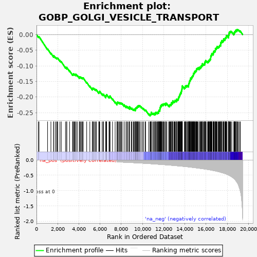
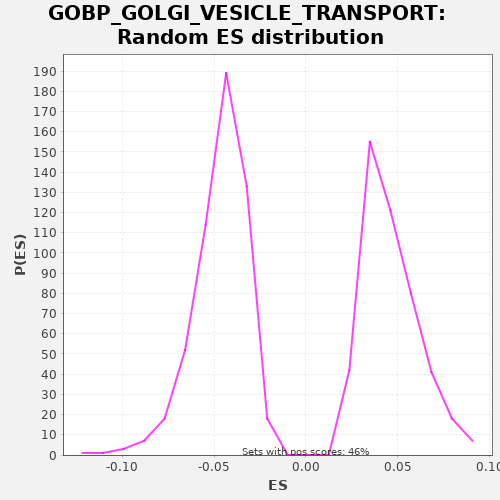

| | | Dataset | A_X_tradeoff |
| Phenotype | NoPhenotypeAvailable |
| Upregulated in class | na_neg |
| GeneSet | GOBP_GOLGI_VESICLE_TRANSPORT |
| Enrichment Score (ES) | -0.26048392 |
| Normalized Enrichment Score (NES) | -5.6135373 |
| Nominal p-value | 0.0 |
| FDR q-value | 0.0 |
| FWER p-Value | 0.0 |
Table: GSEA Results Summary

Fig 1: Enrichment plot: GOBP_GOLGI_VESICLE_TRANSPORT
Profile of the Running ES Score & Positions of GeneSet Members on the Rank Ordered List
| SYMBOL | RANK IN GENE LIST | RANK METRIC SCORE | RUNNING ES | CORE ENRICHMENT | | 1 | CD55 | 181 | -0.001 | -0.0065 | No |
| 2 | LMAN1L | 238 | -0.001 | -0.0066 | No |
| 3 | SORCS1 | 1046 | -0.006 | -0.0459 | No |
| 4 | SEC31B | 1360 | -0.007 | -0.0593 | No |
| 5 | COL7A1 | 1612 | -0.009 | -0.0695 | No |
| 6 | LYPLA1 | 1622 | -0.009 | -0.0671 | No |
| 7 | SPTBN5 | 1773 | -0.010 | -0.0720 | No |
| 8 | SNX8 | 1894 | -0.010 | -0.0753 | No |
| 9 | TMED7 | 1947 | -0.011 | -0.0751 | No |
| 10 | MAPK15 | 2010 | -0.011 | -0.0755 | No |
| 11 | GORASP1 | 2214 | -0.012 | -0.0832 | No |
| 12 | SEC23A | 2339 | -0.013 | -0.0867 | No |
| 13 | ARF5 | 2736 | -0.016 | -0.1045 | No |
| 14 | TMED6 | 2851 | -0.016 | -0.1076 | No |
| 15 | NAPA | 2854 | -0.016 | -0.1047 | No |
| 16 | NRBP1 | 3121 | -0.018 | -0.1157 | No |
| 17 | SEC22A | 3404 | -0.020 | -0.1276 | No |
| 18 | PREB | 3451 | -0.020 | -0.1271 | No |
| 19 | SNX12 | 3480 | -0.021 | -0.1256 | No |
| 20 | PROZ | 3564 | -0.021 | -0.1270 | No |
| 21 | CNIH3 | 3612 | -0.021 | -0.1266 | No |
| 22 | BET1 | 3713 | -0.022 | -0.1289 | No |
| 23 | DCTN3 | 3737 | -0.022 | -0.1271 | No |
| 24 | COG8 | 3874 | -0.023 | -0.1313 | No |
| 25 | OPTN | 4047 | -0.025 | -0.1374 | No |
| 26 | BICD2 | 4065 | -0.025 | -0.1354 | No |
| 27 | OSBPL5 | 4122 | -0.026 | -0.1354 | No |
| 28 | VPS51 | 4203 | -0.026 | -0.1366 | No |
| 29 | ARFRP1 | 4288 | -0.027 | -0.1381 | No |
| 30 | KIF22 | 4360 | -0.028 | -0.1389 | No |
| 31 | STEAP2 | 4407 | -0.028 | -0.1384 | No |
| 32 | SYS1 | 4737 | -0.031 | -0.1527 | No |
| 33 | ANK1 | 5036 | -0.034 | -0.1653 | No |
| 34 | COG7 | 5270 | -0.036 | -0.1746 | No |
| 35 | TMED1 | 5272 | -0.036 | -0.1717 | No |
| 36 | TRAPPC3 | 5344 | -0.037 | -0.1725 | No |
| 37 | CREB3L2 | 5388 | -0.038 | -0.1719 | No |
| 38 | RAB31 | 5495 | -0.039 | -0.1745 | No |
| 39 | AMN | 5578 | -0.040 | -0.1759 | No |
| 40 | KIF3A | 5652 | -0.041 | -0.1767 | No |
| 41 | TRAPPC5 | 5881 | -0.044 | -0.1858 | No |
| 42 | ARL3 | 5906 | -0.044 | -0.1841 | No |
| 43 | KIF1C | 5942 | -0.044 | -0.1830 | No |
| 44 | CTSC | 5971 | -0.045 | -0.1815 | No |
| 45 | PKDCC | 6195 | -0.047 | -0.1903 | No |
| 46 | PROS1 | 6294 | -0.049 | -0.1925 | No |
| 47 | SNAP23 | 6319 | -0.049 | -0.1908 | No |
| 48 | AP4M1 | 6540 | -0.052 | -0.1994 | No |
| 49 | RAB7B | 6549 | -0.052 | -0.1969 | No |
| 50 | LMAN2L | 6568 | -0.052 | -0.1949 | No |
| 51 | F9 | 6603 | -0.053 | -0.1938 | No |
| 52 | MPPE1 | 6627 | -0.053 | -0.1920 | No |
| 53 | KDELR1 | 6847 | -0.056 | -0.2006 | No |
| 54 | VPS35L | 6862 | -0.056 | -0.1984 | No |
| 55 | GAS1 | 6931 | -0.058 | -0.1990 | No |
| 56 | STX6 | 6939 | -0.058 | -0.1965 | No |
| 57 | BGLAP | 7173 | -0.061 | -0.2057 | No |
| 58 | AP1G2 | 7422 | -0.064 | -0.2158 | No |
| 59 | GOSR2 | 7602 | -0.067 | -0.2222 | No |
| 60 | ERGIC1 | 7608 | -0.067 | -0.2196 | No |
| 61 | VAMP7 | 7626 | -0.067 | -0.2175 | No |
| 62 | F2 | 7651 | -0.068 | -0.2159 | No |
| 63 | RAB14 | 7730 | -0.069 | -0.2170 | No |
| 64 | RP2 | 7824 | -0.070 | -0.2190 | No |
| 65 | LMAN1 | 7863 | -0.071 | -0.2180 | No |
| 66 | PDCD6 | 7946 | -0.072 | -0.2194 | No |
| 67 | RINT1 | 8007 | -0.073 | -0.2196 | No |
| 68 | TRAPPC1 | 8077 | -0.074 | -0.2203 | No |
| 69 | CEP19 | 8265 | -0.078 | -0.2272 | No |
| 70 | VAMP3 | 8274 | -0.078 | -0.2247 | No |
| 71 | CTSZ | 8451 | -0.081 | -0.2309 | No |
| 72 | AREG | 8469 | -0.081 | -0.2289 | No |
| 73 | SAR1B | 8568 | -0.082 | -0.2311 | No |
| 74 | TMED10 | 8652 | -0.084 | -0.2325 | No |
| 75 | VTI1A | 8780 | -0.086 | -0.2363 | No |
| 76 | KLC2 | 8784 | -0.086 | -0.2335 | No |
| 77 | PEF1 | 8787 | -0.086 | -0.2307 | No |
| 78 | TMED5 | 8955 | -0.089 | -0.2365 | No |
| 79 | TICAM2 | 8997 | -0.090 | -0.2357 | No |
| 80 | VCP | 9129 | -0.092 | -0.2396 | No |
| 81 | LRRK2 | 9194 | -0.093 | -0.2401 | No |
| 82 | CORO7 | 9228 | -0.094 | -0.2389 | No |
| 83 | GRIA1 | 9328 | -0.096 | -0.2411 | No |
| 84 | BNIP1 | 9336 | -0.096 | -0.2386 | No |
| 85 | RER1 | 9348 | -0.096 | -0.2362 | No |
| 86 | NKD2 | 9373 | -0.097 | -0.2345 | No |
| 87 | BBS2 | 9410 | -0.097 | -0.2335 | No |
| 88 | VAMP5 | 9471 | -0.098 | -0.2337 | No |
| 89 | VAMP8 | 9489 | -0.099 | -0.2317 | No |
| 90 | SCYL1 | 9528 | -0.099 | -0.2307 | No |
| 91 | COPG1 | 9547 | -0.100 | -0.2288 | No |
| 92 | TRAPPC12 | 9614 | -0.101 | -0.2293 | No |
| 93 | CCDC93 | 9631 | -0.102 | -0.2272 | No |
| 94 | WIPI1 | 9714 | -0.103 | -0.2286 | No |
| 95 | SEC16B | 9753 | -0.104 | -0.2276 | No |
| 96 | KDELR3 | 9878 | -0.107 | -0.2312 | No |
| 97 | SNX3 | 10011 | -0.109 | -0.2352 | No |
| 98 | SAR1A | 10100 | -0.111 | -0.2369 | No |
| 99 | PRKCI | 10251 | -0.114 | -0.2418 | No |
| 100 | STX17 | 10301 | -0.115 | -0.2414 | No |
| 101 | TMEM115 | 10596 | -0.122 | -0.2539 | No |
| 102 | SEC13 | 10723 | -0.124 | -0.2576 | Yes |
| 103 | YIF1A | 10738 | -0.125 | -0.2554 | Yes |
| 104 | F8 | 10777 | -0.126 | -0.2544 | Yes |
| 105 | BBS1 | 10823 | -0.127 | -0.2539 | Yes |
| 106 | NBAS | 10827 | -0.127 | -0.2511 | Yes |
| 107 | USE1 | 10835 | -0.128 | -0.2485 | Yes |
| 108 | DCTN2 | 10973 | -0.131 | -0.2528 | Yes |
| 109 | F10 | 11016 | -0.132 | -0.2521 | Yes |
| 110 | COMMD1 | 11118 | -0.134 | -0.2544 | Yes |
| 111 | TRAPPC4 | 11128 | -0.135 | -0.2520 | Yes |
| 112 | CLN3 | 11217 | -0.137 | -0.2536 | Yes |
| 113 | KLHL20 | 11233 | -0.137 | -0.2515 | Yes |
| 114 | TAPBP | 11245 | -0.138 | -0.2492 | Yes |
| 115 | ARF4 | 11307 | -0.139 | -0.2494 | Yes |
| 116 | CSNK1D | 11389 | -0.141 | -0.2507 | Yes |
| 117 | VTI1B | 11438 | -0.142 | -0.2503 | Yes |
| 118 | DCTN6 | 11449 | -0.143 | -0.2479 | Yes |
| 119 | TRAPPC9 | 11529 | -0.145 | -0.2491 | Yes |
| 120 | TRAPPC2L | 11535 | -0.145 | -0.2465 | Yes |
| 121 | RANGRF | 11547 | -0.145 | -0.2441 | Yes |
| 122 | SLC10A7 | 11562 | -0.146 | -0.2419 | Yes |
| 123 | STX18 | 11636 | -0.148 | -0.2428 | Yes |
| 124 | RAB8B | 11646 | -0.148 | -0.2404 | Yes |
| 125 | ARFGAP1 | 11650 | -0.148 | -0.2376 | Yes |
| 126 | GGA1 | 11665 | -0.148 | -0.2354 | Yes |
| 127 | COG1 | 11674 | -0.149 | -0.2329 | Yes |
| 128 | GOLPH3L | 11705 | -0.149 | -0.2316 | Yes |
| 129 | ATP9B | 11706 | -0.149 | -0.2286 | Yes |
| 130 | SGSM2 | 11762 | -0.151 | -0.2286 | Yes |
| 131 | COG2 | 11766 | -0.151 | -0.2258 | Yes |
| 132 | KDELR2 | 11829 | -0.152 | -0.2261 | Yes |
| 133 | CNIH2 | 11836 | -0.152 | -0.2235 | Yes |
| 134 | COG5 | 11886 | -0.154 | -0.2232 | Yes |
| 135 | KLHL12 | 11972 | -0.156 | -0.2247 | Yes |
| 136 | TFG | 11981 | -0.156 | -0.2222 | Yes |
| 137 | TRAPPC6B | 12026 | -0.157 | -0.2216 | Yes |
| 138 | DNAJC28 | 12085 | -0.159 | -0.2217 | Yes |
| 139 | STXBP6 | 12189 | -0.162 | -0.2241 | Yes |
| 140 | MYO1B | 12206 | -0.162 | -0.2221 | Yes |
| 141 | MCFD2 | 12213 | -0.162 | -0.2194 | Yes |
| 142 | KIF16B | 12299 | -0.164 | -0.2210 | Yes |
| 143 | RNF215 | 12470 | -0.169 | -0.2269 | Yes |
| 144 | TRAPPC2 | 12558 | -0.172 | -0.2286 | Yes |
| 145 | SNX2 | 12559 | -0.172 | -0.2256 | Yes |
| 146 | CCDC22 | 12592 | -0.173 | -0.2244 | Yes |
| 147 | RNF139 | 12644 | -0.174 | -0.2241 | Yes |
| 148 | WHAMM | 12707 | -0.176 | -0.2245 | Yes |
| 149 | SEC24D | 12718 | -0.176 | -0.2221 | Yes |
| 150 | KIF13A | 12727 | -0.177 | -0.2196 | Yes |
| 151 | EHD3 | 12749 | -0.177 | -0.2177 | Yes |
| 152 | AP2A1 | 12836 | -0.179 | -0.2193 | Yes |
| 153 | SPTBN4 | 12856 | -0.180 | -0.2174 | Yes |
| 154 | CUX1 | 12859 | -0.180 | -0.2146 | Yes |
| 155 | TEX261 | 12864 | -0.180 | -0.2118 | Yes |
| 156 | MYO18A | 12983 | -0.184 | -0.2151 | Yes |
| 157 | RAB33B | 13030 | -0.185 | -0.2146 | Yes |
| 158 | SURF4 | 13058 | -0.186 | -0.2131 | Yes |
| 159 | COG4 | 13064 | -0.187 | -0.2104 | Yes |
| 160 | SORL1 | 13140 | -0.189 | -0.2114 | Yes |
| 161 | BET1L | 13215 | -0.191 | -0.2124 | Yes |
| 162 | CNIH1 | 13218 | -0.191 | -0.2095 | Yes |
| 163 | SPTB | 13221 | -0.192 | -0.2067 | Yes |
| 164 | ARF1 | 13287 | -0.193 | -0.2072 | Yes |
| 165 | UVRAG | 13359 | -0.196 | -0.2080 | Yes |
| 166 | SCFD1 | 13379 | -0.196 | -0.2061 | Yes |
| 167 | ANK3 | 13392 | -0.197 | -0.2038 | Yes |
| 168 | SPIRE2 | 13423 | -0.198 | -0.2024 | Yes |
| 169 | LAMP1 | 13424 | -0.198 | -0.1995 | Yes |
| 170 | SCAMP2 | 13463 | -0.199 | -0.1985 | Yes |
| 171 | TBC1D20 | 13487 | -0.200 | -0.1968 | Yes |
| 172 | CSK | 13522 | -0.202 | -0.1957 | Yes |
| 173 | SCAMP3 | 13528 | -0.202 | -0.1930 | Yes |
| 174 | SEC22C | 13534 | -0.202 | -0.1904 | Yes |
| 175 | SEC24A | 13585 | -0.204 | -0.1900 | Yes |
| 176 | BCAP29 | 13595 | -0.204 | -0.1876 | Yes |
| 177 | CAPZB | 13615 | -0.205 | -0.1857 | Yes |
| 178 | ERGIC2 | 13667 | -0.206 | -0.1854 | Yes |
| 179 | EXOC6B | 13669 | -0.207 | -0.1825 | Yes |
| 180 | SEC22B | 13686 | -0.207 | -0.1804 | Yes |
| 181 | KIF2C | 13694 | -0.207 | -0.1779 | Yes |
| 182 | BLZF1 | 13720 | -0.208 | -0.1763 | Yes |
| 183 | ACTR10 | 13729 | -0.208 | -0.1738 | Yes |
| 184 | COPG2 | 13737 | -0.208 | -0.1712 | Yes |
| 185 | FOLR1 | 13746 | -0.209 | -0.1687 | Yes |
| 186 | TBC1D14 | 13753 | -0.209 | -0.1661 | Yes |
| 187 | GAS6 | 13770 | -0.209 | -0.1640 | Yes |
| 188 | PGAP1 | 13965 | -0.216 | -0.1712 | Yes |
| 189 | RABIF | 13987 | -0.217 | -0.1694 | Yes |
| 190 | KIF3C | 14035 | -0.219 | -0.1689 | Yes |
| 191 | GGA3 | 14036 | -0.219 | -0.1660 | Yes |
| 192 | TRAPPC6A | 14062 | -0.220 | -0.1644 | Yes |
| 193 | COG3 | 14105 | -0.221 | -0.1637 | Yes |
| 194 | LLGL1 | 14193 | -0.224 | -0.1653 | Yes |
| 195 | TMED9 | 14213 | -0.225 | -0.1634 | Yes |
| 196 | DCTN5 | 14258 | -0.227 | -0.1628 | Yes |
| 197 | YIPF5 | 14355 | -0.230 | -0.1649 | Yes |
| 198 | SCAMP1 | 14358 | -0.230 | -0.1620 | Yes |
| 199 | PRKD1 | 14364 | -0.231 | -0.1594 | Yes |
| 200 | ACSL3 | 14372 | -0.231 | -0.1568 | Yes |
| 201 | ANKFY1 | 14396 | -0.232 | -0.1551 | Yes |
| 202 | KIFAP3 | 14421 | -0.233 | -0.1534 | Yes |
| 203 | CAPZA2 | 14423 | -0.233 | -0.1506 | Yes |
| 204 | EXOC8 | 14450 | -0.234 | -0.1490 | Yes |
| 205 | GOLGA7 | 14481 | -0.235 | -0.1476 | Yes |
| 206 | CYTH3 | 14499 | -0.236 | -0.1456 | Yes |
| 207 | DCTN4 | 14540 | -0.237 | -0.1448 | Yes |
| 208 | SCAP | 14544 | -0.238 | -0.1420 | Yes |
| 209 | GOSR1 | 14546 | -0.238 | -0.1391 | Yes |
| 210 | ZW10 | 14621 | -0.242 | -0.1401 | Yes |
| 211 | SEC23B | 14626 | -0.242 | -0.1374 | Yes |
| 212 | SEC16A | 14675 | -0.243 | -0.1370 | Yes |
| 213 | TMED2 | 14687 | -0.244 | -0.1346 | Yes |
| 214 | CAPZA1 | 14719 | -0.246 | -0.1333 | Yes |
| 215 | TGFA | 14758 | -0.247 | -0.1324 | Yes |
| 216 | EPS15 | 14781 | -0.248 | -0.1306 | Yes |
| 217 | CNST | 14802 | -0.249 | -0.1287 | Yes |
| 218 | COPB2 | 14808 | -0.250 | -0.1261 | Yes |
| 219 | HTT | 14819 | -0.250 | -0.1237 | Yes |
| 220 | EXOC1 | 14874 | -0.252 | -0.1236 | Yes |
| 221 | KIF3B | 14909 | -0.254 | -0.1224 | Yes |
| 222 | SNX1 | 14930 | -0.255 | -0.1205 | Yes |
| 223 | F7 | 14931 | -0.255 | -0.1176 | Yes |
| 224 | SEC23IP | 14982 | -0.257 | -0.1173 | Yes |
| 225 | RAB6A | 15036 | -0.260 | -0.1172 | Yes |
| 226 | VAPA | 15051 | -0.260 | -0.1150 | Yes |
| 227 | TMED3 | 15092 | -0.262 | -0.1141 | Yes |
| 228 | LMAN2 | 15094 | -0.262 | -0.1113 | Yes |
| 229 | GGA2 | 15115 | -0.263 | -0.1094 | Yes |
| 230 | KLC1 | 15164 | -0.265 | -0.1090 | Yes |
| 231 | INSIG1 | 15215 | -0.268 | -0.1087 | Yes |
| 232 | GOLGA2 | 15230 | -0.268 | -0.1065 | Yes |
| 233 | VPS52 | 15350 | -0.274 | -0.1098 | Yes |
| 234 | GAK | 15353 | -0.274 | -0.1070 | Yes |
| 235 | MON2 | 15366 | -0.274 | -0.1047 | Yes |
| 236 | DOP1A | 15459 | -0.279 | -0.1066 | Yes |
| 237 | CENPE | 15498 | -0.281 | -0.1056 | Yes |
| 238 | NAPG | 15516 | -0.282 | -0.1036 | Yes |
| 239 | DYNC1I2 | 15522 | -0.282 | -0.1009 | Yes |
| 240 | TMED4 | 15583 | -0.285 | -0.1011 | Yes |
| 241 | PPP6R1 | 15593 | -0.285 | -0.0987 | Yes |
| 242 | NRBP2 | 15643 | -0.287 | -0.0983 | Yes |
| 243 | PLPP3 | 15653 | -0.288 | -0.0959 | Yes |
| 244 | RAB8A | 15658 | -0.288 | -0.0932 | Yes |
| 245 | SEC24B | 15762 | -0.294 | -0.0956 | Yes |
| 246 | RAB6B | 15797 | -0.295 | -0.0945 | Yes |
| 247 | GOLGA5 | 15866 | -0.299 | -0.0951 | Yes |
| 248 | PPP6C | 15880 | -0.300 | -0.0929 | Yes |
| 249 | COG6 | 15883 | -0.300 | -0.0900 | Yes |
| 250 | ANKRD28 | 15896 | -0.301 | -0.0877 | Yes |
| 251 | VPS54 | 15950 | -0.303 | -0.0876 | Yes |
| 252 | GOLGA3 | 15953 | -0.303 | -0.0848 | Yes |
| 253 | MACF1 | 15973 | -0.304 | -0.0828 | Yes |
| 254 | IER3IP1 | 16092 | -0.310 | -0.0861 | Yes |
| 255 | EXOC6 | 16179 | -0.315 | -0.0877 | Yes |
| 256 | SEC24C | 16217 | -0.317 | -0.0867 | Yes |
| 257 | ARFGEF2 | 16233 | -0.318 | -0.0845 | Yes |
| 258 | DCTN1 | 16278 | -0.321 | -0.0839 | Yes |
| 259 | EXOC2 | 16292 | -0.321 | -0.0817 | Yes |
| 260 | GOLGB1 | 16340 | -0.324 | -0.0812 | Yes |
| 261 | COPZ2 | 16385 | -0.327 | -0.0806 | Yes |
| 262 | MIA2 | 16387 | -0.327 | -0.0777 | Yes |
| 263 | DNM2 | 16441 | -0.331 | -0.0776 | Yes |
| 264 | HYOU1 | 16444 | -0.331 | -0.0748 | Yes |
| 265 | COPZ1 | 16445 | -0.331 | -0.0718 | Yes |
| 266 | RAB1B | 16462 | -0.332 | -0.0697 | Yes |
| 267 | RBSN | 16468 | -0.333 | -0.0671 | Yes |
| 268 | GCC2 | 16503 | -0.335 | -0.0659 | Yes |
| 269 | ARFGAP2 | 16530 | -0.336 | -0.0644 | Yes |
| 270 | YKT6 | 16543 | -0.337 | -0.0621 | Yes |
| 271 | ACTR1A | 16567 | -0.339 | -0.0604 | Yes |
| 272 | KIF18A | 16671 | -0.347 | -0.0628 | Yes |
| 273 | CCDC91 | 16690 | -0.349 | -0.0608 | Yes |
| 274 | KIF2A | 16696 | -0.349 | -0.0582 | Yes |
| 275 | KIF15 | 16707 | -0.349 | -0.0558 | Yes |
| 276 | ERGIC3 | 16733 | -0.351 | -0.0542 | Yes |
| 277 | KIF23 | 16760 | -0.353 | -0.0526 | Yes |
| 278 | EXOC4 | 16837 | -0.358 | -0.0537 | Yes |
| 279 | TRAPPC8 | 16855 | -0.359 | -0.0516 | Yes |
| 280 | USO1 | 16879 | -0.361 | -0.0499 | Yes |
| 281 | COPB1 | 16884 | -0.361 | -0.0472 | Yes |
| 282 | VAPB | 16886 | -0.362 | -0.0443 | Yes |
| 283 | BCAP31 | 16963 | -0.368 | -0.0454 | Yes |
| 284 | AP3D1 | 16973 | -0.369 | -0.0429 | Yes |
| 285 | RACGAP1 | 17020 | -0.373 | -0.0424 | Yes |
| 286 | ARF3 | 17031 | -0.374 | -0.0400 | Yes |
| 287 | GABARAPL2 | 17047 | -0.375 | -0.0379 | Yes |
| 288 | PPP6R3 | 17155 | -0.384 | -0.0405 | Yes |
| 289 | GOPC | 17192 | -0.387 | -0.0395 | Yes |
| 290 | TRAPPC11 | 17233 | -0.390 | -0.0387 | Yes |
| 291 | EXOC5 | 17262 | -0.392 | -0.0372 | Yes |
| 292 | RAB1A | 17284 | -0.394 | -0.0354 | Yes |
| 293 | AP1G1 | 17316 | -0.398 | -0.0341 | Yes |
| 294 | DYNC1LI2 | 17376 | -0.404 | -0.0342 | Yes |
| 295 | TRAPPC10 | 17380 | -0.404 | -0.0315 | Yes |
| 296 | PREPL | 17388 | -0.405 | -0.0289 | Yes |
| 297 | LAPTM5 | 17397 | -0.405 | -0.0264 | Yes |
| 298 | DOP1B | 17413 | -0.407 | -0.0243 | Yes |
| 299 | VPS13C | 17470 | -0.414 | -0.0243 | Yes |
| 300 | RAB10 | 17477 | -0.414 | -0.0217 | Yes |
| 301 | DYNC1LI1 | 17488 | -0.416 | -0.0193 | Yes |
| 302 | AP1AR | 17594 | -0.426 | -0.0218 | Yes |
| 303 | GBF1 | 17625 | -0.430 | -0.0205 | Yes |
| 304 | VPS13A | 17630 | -0.430 | -0.0178 | Yes |
| 305 | DYNC1I1 | 17662 | -0.433 | -0.0165 | Yes |
| 306 | DYNC1H1 | 17664 | -0.433 | -0.0136 | Yes |
| 307 | MIA3 | 17772 | -0.446 | -0.0163 | Yes |
| 308 | COPA | 17778 | -0.446 | -0.0136 | Yes |
| 309 | MYO5A | 17810 | -0.450 | -0.0123 | Yes |
| 310 | SEC31A | 17831 | -0.452 | -0.0104 | Yes |
| 311 | RABEP1 | 17876 | -0.458 | -0.0098 | Yes |
| 312 | GOLPH3 | 17904 | -0.461 | -0.0083 | Yes |
| 313 | SORT1 | 17912 | -0.462 | -0.0057 | Yes |
| 314 | KIF26A | 17919 | -0.463 | -0.0031 | Yes |
| 315 | SPIRE1 | 17991 | -0.472 | -0.0039 | Yes |
| 316 | RAB13 | 18124 | -0.495 | -0.0079 | Yes |
| 317 | NSF | 18126 | -0.496 | -0.0050 | Yes |
| 318 | F5 | 18128 | -0.496 | -0.0022 | Yes |
| 319 | ARFGAP3 | 18160 | -0.501 | -0.0008 | Yes |
| 320 | ANK2 | 18165 | -0.502 | 0.0019 | Yes |
| 321 | YIF1B | 18173 | -0.503 | 0.0044 | Yes |
| 322 | SPTBN1 | 18190 | -0.505 | 0.0065 | Yes |
| 323 | COPE | 18206 | -0.509 | 0.0086 | Yes |
| 324 | KIF5A | 18277 | -0.523 | 0.0079 | Yes |
| 325 | TRIP11 | 18316 | -0.530 | 0.0088 | Yes |
| 326 | GOLGA4 | 18339 | -0.535 | 0.0106 | Yes |
| 327 | PITPNB | 18438 | -0.555 | 0.0084 | Yes |
| 328 | SPAST | 18624 | -0.607 | 0.0017 | Yes |
| 329 | DYNLL2 | 18650 | -0.613 | 0.0033 | Yes |
| 330 | VAMP2 | 18654 | -0.614 | 0.0060 | Yes |
| 331 | KRT18 | 18693 | -0.628 | 0.0070 | Yes |
| 332 | PICK1 | 18703 | -0.631 | 0.0094 | Yes |
| 333 | SPTAN1 | 18761 | -0.650 | 0.0094 | Yes |
| 334 | ARCN1 | 18789 | -0.664 | 0.0109 | Yes |
| 335 | RAB34 | 18791 | -0.665 | 0.0138 | Yes |
| 336 | RACK1 | 18883 | -0.708 | 0.0119 | Yes |
| 337 | CUL3 | 18903 | -0.718 | 0.0138 | Yes |
| 338 | DYNLL1 | 18916 | -0.726 | 0.0161 | Yes |
| 339 | CNIH4 | 18981 | -0.761 | 0.0157 | Yes |
| 340 | KIF11 | 19048 | -0.802 | 0.0152 | Yes |
| 341 | ATP9A | 19166 | -0.926 | 0.0120 | Yes |
| 342 | SPTBN2 | 19241 | -1.024 | 0.0110 | Yes |
Table: GSEA details [plain text format]

Fig 2: GOBP_GOLGI_VESICLE_TRANSPORT: Random ES distribution
Gene set null distribution of ES for GOBP_GOLGI_VESICLE_TRANSPORT